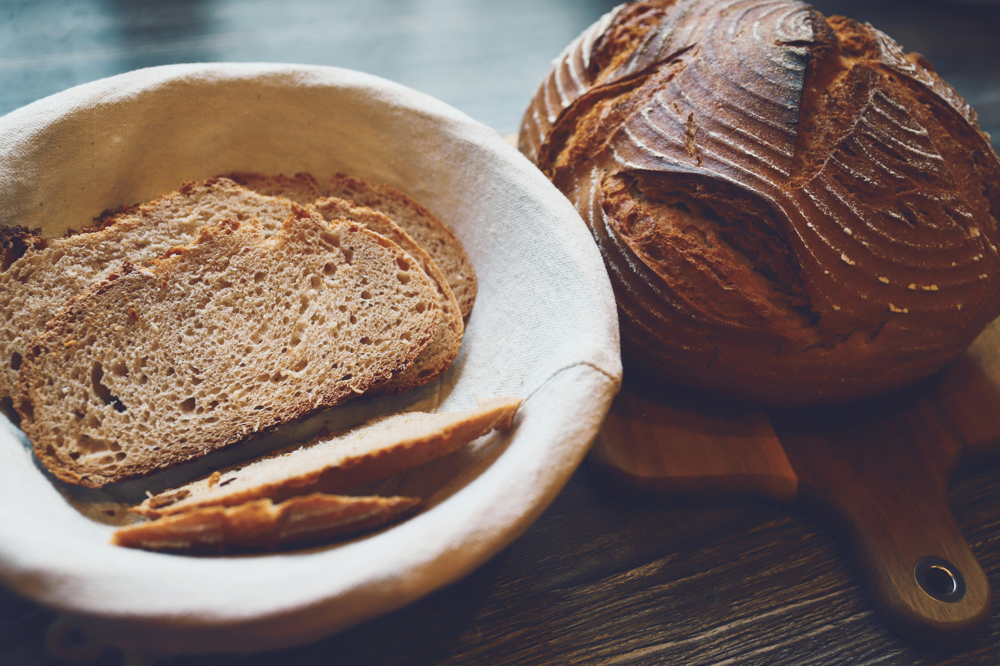

Savage Rye Sourdough

A sourdough rye bread that is dense and filling, providing great strength!
While it is simple to make, it provides rich flavor to pair with your favorite
toppings, like the delicious Menacing Gravlax!
This sourdough rye bread is hearty and filling, supplying you with the calories
to forge forward into war!
Ingredients
Sourdough Rye Dough
- 55 grams active sourdough starter
- 280 grams slightly warmer than room temperature water (about 80-85 ddegrees farenheit)
- 15 grams honey
- 100 grams medium (or light) rye flour
- 260 grams bread flour
- 40 grams whole wheat flour
- 7 grams fine sea salt
Equipment
- Oval banneton
- Bench scraper
- Dutch oven
Instructions
Mix the Dough
- Add starter, water, and honey to a bowl. Whisk thoroughly until combined, with a fork.
Add flours, and mix together first with the fork to start to incorporate, then with you hands
until a shaggy dough is formed, and the bits of flour left just disappear. Sprinkle the salt
on top and do not mix in, just leave it on top. Cover with a damp cloth.
Autolyse
- Let the bread autolyse: Let the dough sit for one hour, covered and undisturbed.
Bulk Ferment
- Now will you will knead the salt that is sitting on top, into the dough for about 2 1/2 minutes.
There is no precsie way to do this, just think of working the dough through your hands and up against
the bowl, push and pull. You will start to feel the dough relax a bit around 1 minute.
Then leave the dough alone, covered, for 30 minutes. This counts as you first set of stretch and rolls.
- After those 30 minutes pass, perform a set of stretch and folds. Repeat 2 more times.
- Now you will let it sit, undisturbed and covered with a damp cloth, for the remainder of its bulk
fermentation. You will know it is finished with its bulk ferment when the dough has risen about 75% (just short of doubling)
in size, is the smooth and puffy on top, with a few bubbles around the edges. It will not be as jiggly as some sourdough
you've made before. It will take between 5-7 hours, depending on the temperature of your home. If the temperature in your
home is above 72 degrees, it will be on the shorter end; if it is cooler it will be on the longer end.
always go by the look and feel of your dough to know when it is finished proofing rather than time.
- When the bulk fermentation is complete, lightly dust t]your work surface with flour. Put dough onto the work surface,
and pre-shape. then let it sit for 15 minutes on your work surface.
- After 15 minutes have passed, shape the dough into a ball.
- Place the dough into your flour dusted banneton, (or flour dusted linen lined banneton) seam side up.
Now the dough will go through its final rise. You can do this on the counter, which will take about 1 1/2 to 2 hours at 70 degrees
farenheit for the dough to puff up and be jiggly. It will not double.
Bake
- Preheat the oven to 475 degrees farenheit. with your dutch oven preheating inside the oven.
- Flip your dough out gently onto parchment paper with the seam side down and score the dough.
- Put the scored dough into the dutch oven on the parchment, and put cover on. Turn the oven down to 450 degrees farenheit
and slide the dutch oven into the oven. Bake for 20 minutes, then remove the dutch ovens cover.
- Turn the heat down to 430 degrees farenheit, and bake for 20 to 25 more minutes, until the crust is golden brown and crackly.
Remove the dutch oven, and then remove the bread form the dutch oven and place onto a cooling rack.
- Wait at least one hour to cool, otherwise the interior will be gummy.